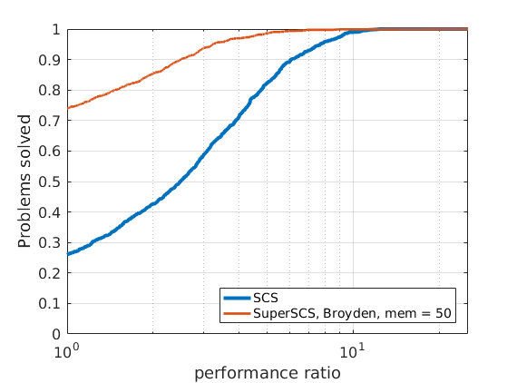
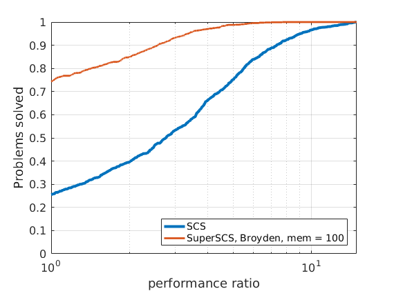
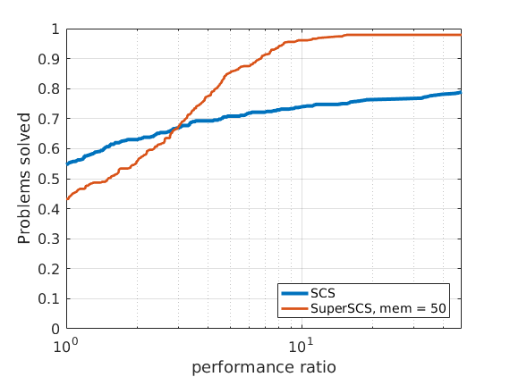
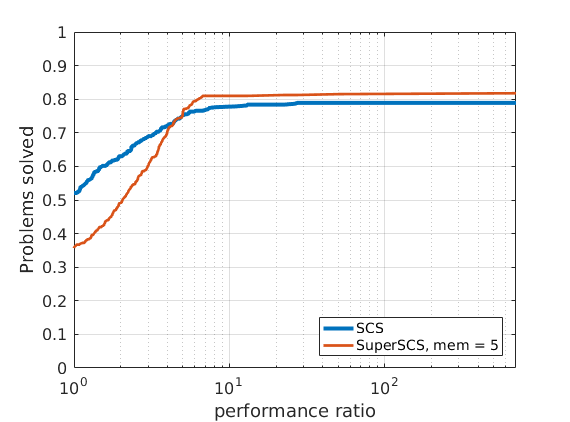

|
SuperSCS
|
|
SuperSCS
|
In order to compare different solvers, we employ the Dolan-Moré performance profile plot.
Let us briefly introduce the Dolan-Moré performance profile plot.
Let \(P\) be a finite set of problems used as benchmarks and \(S\) be a set of solvers we want to compare to one another.
Let \(t_{p,s}\) be the computing cost (e.g., time of flops) to solve a problem \(p\) using a solver \(s\).
We define the ration between \(t_{p,s}\) and the lowest observed cost to solve this problem using some solver \(s\in S\):
\begin{eqnarray*} r_{p,s} = \frac{t_{p,s}}{\min_{s \in S} t_{p,s}}. \end{eqnarray*}
If a solver \(s\) does not solve a problem \(p\), then we assign to \(r_{p,s}\) a very high value \(r_M > r_{p,s}\) for all other \(p,s\).
The cumulative distribution of the performance ratio is the Dolan-Moré performance profile plot.
In particular, define
\begin{eqnarray*} \rho_s(\tau) = \frac{1}{n_p}\#\{p\in P: r_{p,s}\leq \tau\}, \end{eqnarray*}
for \(\tau\geq 1\) and where \(n_p\) is the number of problems.
The Dolan-Moré performance profile is the plot of \(\rho_s\) vs \(\tau\), typically on a logarithmic x-axis.
In all benchmark results presented below we set the tolerance of \(10^{-4}\).

|

| 
|

| 
| 
|
288 logistic regression problems

| 
| 
|

| 
| 
|

| 
|

|
We tested SuperSCS on the Maros-Meszaros collection of QP problems.
| PROBLEM | SCS | Anderson, mem:3 | Anderson, mem:5 | Anderson, mem:10 | Broyden, mem:50 | Broyden, mem:100 |
|---|---|---|---|---|---|---|
| AUG2D | FAIL (5000) | 7856.9 (312) | 3261.4 (128) | 3973.2 (162) | 5534.1 (185) | 24386.1 (599) |
| AUG2DC | FAIL (5000) | 2693.6 (113) | 2648.9 (113) | 6704.3 (217) | 5462.8 (169) | 3653.4 (111) |
| AUG2DCQP | 579.8 (99) | 350.3 (32) | 384.6 (31) | 479.9 (28) | 618.4 (37) | 603.6 (37) |
| AUG3D | 0.2 (0) | 0.3 (0) | 0.3 (0) | 0.3 (0) | 0.3 (0) | 0.5 (0) |
| AUG3DC | FAIL (5000) | 119.6 (100) | 23.0 (22) | 58.8 (37) | 81.7 (65) | 271.4 (156) |
| AUG3DCQP | FAIL (5000) | 1208.6 (607) | 1023.4 (377) | 1521.6 (415) | 491.8 (195) | 991.7 (277) |
| AUG3DQP | FAIL (5000) | 510.2 (162) | 901.0 (229) | 753.7 (160) | 821.4 (184) | 2833.9 (466) |
| CONT-050 | 935.5 (1157) | 1671.5 (770) | 1969.2 (786) | 2759.2 (757) | 4239.5 (1515) | 4449.8 (1184) |
| CONT-100 | 5803.7 (1656) | 8912.9 (960) | 10272.0 (949) | 19014.3 (1146) | 27125.9 (1995) | 33595.4 (1931) |
| DPKLO1 | 0.7 (10) | 0.5 (3) | 0.4 (3) | 0.7 (3) | 0.3 (3) | 0.3 (3) |
| DUAL1 | 7.9 (65) | 10.2 (42) | 11.0 (45) | 16.7 (53) | 12.2 (45) | 11.7 (45) |
| DUAL2 | 12.5 (82) | 14.0 (59) | 12.6 (46) | 21.0 (58) | 16.5 (56) | 15.2 (52) |
| DUAL3 | 14.6 (90) | 13.2 (44) | 15.7 (57) | 21.8 (60) | 15.0 (42) | 15.0 (42) |
| DUAL4 | 5.1 (64) | 7.3 (35) | 5.5 (33) | 11.9 (44) | 6.6 (36) | 6.4 (36) |
| DUALC1 | 24.1 (305) | 24.4 (154) | 22.6 (136) | 31.8 (151) | 21.1 (148) | 12.3 (84) |
| DUALC2 | 56.1 (825) | 30.0 (214) | 22.5 (152) | 24.0 (111) | 16.7 (109) | 16.8 (97) |
| DUALC5 | 172.6 (1878) | 20.5 (135) | 14.3 (82) | 16.1 (80) | 12.6 (83) | 11.3 (71) |
| DUALC8 | 134.8 (993) | 57.0 (275) | 45.5 (195) | 25.3 (80) | 24.3 (100) | 20.0 (69) |
| GENHS28 | 0.3 (10) | 0.6 (11) | 0.5 (9) | 0.6 (10) | 0.5 (19) | 0.8 (19) |
| GOULDQP3 | 54.0 (342) | 150.6 (316) | 178.4 (285) | 292.5 (357) | 85.2 (145) | 115.7 (150) |
| HS118 | 2.6 (123) | 4.6 (54) | 4.3 (46) | 5.6 (45) | 2.7 (46) | 3.0 (46) |
| HS21 | 20.1 (751) | 3.8 (59) | 23.1 (274) | 195.1 (1206) | 1.2 (20) | 1.0 (20) |
| HS268 | 0.6 (18) | 0.5 (11) | 0.7 (12) | 1.1 (15) | 0.7 (18) | 0.7 (18) |
| HS35 | 1.2 (31) | 0.9 (17) | 1.3 (15) | 1.3 (17) | 0.6 (16) | 0.6 (16) |
| HS35MOD | 0.7 (32) | 0.8 (19) | 1.2 (17) | 1.1 (14) | 0.8 (18) | 0.8 (18) |
| HS51 | 0.4 (21) | 0.4 (9) | 0.5 (9) | 0.6 (11) | 0.4 (10) | 0.5 (10) |
| HS52 | 0.2 (9) | 0.3 (7) | 0.4 (8) | 0.5 (8) | 0.2 (6) | 0.3 (6) |
| HS53 | 3.3 (108) | 3.6 (69) | 1.2 (20) | 1.9 (22) | 1.1 (22) | 1.1 (22) |
| HS76 | 0.7 (19) | 0.7 (13) | 0.8 (13) | 1.0 (13) | 0.8 (21) | 0.9 (21) |
| HUES-MOD | FAIL (5000) | 11808.2 (2859) | 11117.2 (2183) | 10702.1 (1385) | 9284.9 (1733) | 6995.4 (892) |
| HUESTIS | 26.1 (20) | 53.3 (14) | 30.6 (7) | 89.3 (16) | 21.5 (7) | 19.9 (7) |
| KSIP | 83.8 (110) | 110.2 (97) | 110.5 (89) | 126.9 (84) | 87.1 (51) | 85.5 (51) |
| LASER | 2107.5 (4613) | 2106.2 (2077) | 2365.9 (2207) | 3931.6 (2364) | FAIL (5000) | FAIL (5000) |
| LISWET1 | 4613.6 (2761) | 7973.6 (1461) | 8488.7 (1340) | 7161.8 (847) | 8202.9 (1121) | 23464.1 (2227) |
| LISWET10 | 4437.6 (2837) | 8256.4 (1498) | 8717.2 (1388) | 7500.6 (883) | 13012.9 (1741) | 22575.9 (2182) |
| LISWET11 | 4317.1 (2834) | 7883.3 (1470) | 8990.5 (1430) | 7139.9 (847) | 15755.5 (2116) | 21567.2 (2131) |
| LISWET12 | 4356.8 (2833) | 8349.8 (1529) | 8833.6 (1406) | 7597.3 (883) | 14610.8 (1924) | 21966.8 (2074) |
| LISWET2 | 3544.8 (2204) | 6519.1 (1191) | 6603.9 (1086) | 6250.9 (736) | 8743.5 (1149) | 18464.0 (1780) |
| LISWET3 | 2531.5 (1589) | 4021.2 (801) | 4765.7 (763) | 4533.4 (541) | 8734.8 (1047) | 11655.0 (1117) |
| LISWET4 | 2019.3 (1264) | 3266.1 (672) | 3570.9 (624) | 3612.1 (451) | 6796.2 (873) | 6297.9 (606) |
| LISWET5 | FAIL (5000) | 24095.5 (4211) | 23745.8 (3532) | 24351.6 (2607) | FAIL (5000) | FAIL (5000) |
| LISWET6 | 3717.6 (2590) | 7043.1 (1345) | 8041.5 (1252) | 6270.1 (801) | 14589.5 (1987) | 8406.3 (861) |
| LISWET7 | 4599.4 (2837) | 8559.1 (1484) | 8875.8 (1384) | 8578.4 (896) | 13094.3 (1613) | 28381.5 (2672) |
| LISWET8 | 4436.3 (2837) | 7989.9 (1470) | 8985.2 (1400) | 7649.1 (883) | 10609.3 (1404) | 20227.6 (1894) |
| LISWET9 | 4445.1 (2845) | 8074.1 (1456) | 9087.0 (1406) | 7391.9 (857) | 10684.3 (1401) | FAIL (5000) |
| MOSARQP1 | 982.9 (814) | 878.8 (425) | 972.4 (411) | 1304.3 (401) | 598.7 (194) | 756.9 (201) |
| MOSARQP2 | 219.8 (463) | 190.0 (270) | 187.3 (227) | 224.1 (186) | 171.0 (133) | 188.4 (124) |
| POWELL20 | FAIL (5000) | FAIL (5000) | FAIL (5000) | FAIL (5000) | FAIL (5000) | FAIL (5000) |
| PRIMAL1 | 23.4 (69) | 20.3 (44) | 21.0 (41) | 20.8 (38) | 29.9 (42) | 27.5 (42) |
| PRIMAL2 | 16.2 (32) | 11.5 (21) | 11.4 (20) | 12.3 (19) | 29.2 (29) | 31.0 (29) |
| PRIMAL3 | 28.4 (28) | 24.2 (22) | 23.5 (21) | 23.6 (20) | 80.7 (40) | 77.9 (40) |
| PRIMAL4 | 31.8 (37) | 28.8 (30) | 21.3 (24) | 21.9 (20) | 37.5 (26) | 39.7 (26) |
| PRIMALC1 | 6.0 (62) | 2.6 (9) | 2.0 (8) | 3.1 (13) | 5.7 (31) | 6.3 (31) |
| PRIMALC5 | 6.8 (63) | 10.4 (40) | 22.9 (80) | 250.8 (522) | 13.1 (57) | 36.2 (127) |
| PRIMALC8 | 16.6 (79) | 4.9 (13) | 5.0 (12) | 3.9 (11) | 15.2 (37) | 15.9 (37) |
| QADLITTL | 1.7 (33) | 3.1 (19) | 5.4 (16) | 2.8 (17) | 1.4 (25) | 1.4 (25) |
| QAFIRO | 0.6 (9) | 0.5 (7) | 0.5 (7) | 0.4 (7) | 0.4 (10) | 0.5 (10) |
| QBANDM | 0.2 (8) | 0.6 (6) | 0.7 (6) | 0.7 (6) | 0.5 (8) | 0.5 (8) |
| QBEACONF | 6.2 (84) | 7.6 (54) | 11.0 (63) | 17.8 (93) | 10.0 (72) | 8.8 (56) |
| QBORE3D | FAIL (5000) | FAIL (5000) | FAIL (5000) | FAIL (5000) | FAIL (5000) | FAIL (5000) |
| QBRANDY | 322.7 (1214) | 29.4 (76) | 34.2 (78) | 47.6 (92) | 128.5 (246) | 118.1 (214) |
| QCAPRI | FAIL (5000) | FAIL (5000) | FAIL (5000) | FAIL (5000) | FAIL (5000) | FAIL (5000) |
| QE226 | 833.9 (2122) | 876.5 (994) | 964.6 (954) | 760.1 (834) | FAIL (5000) | FAIL (5000) |
| QETAMACR | FAIL (5000) | FAIL (5000) | FAIL (5000) | FAIL (5000) | FAIL (5000) | FAIL (5000) |
| QFFFFF80 | 5068.8 (2522) | 2475.8 (693) | 2785.9 (770) | 2964.4 (802) | 17990.3 (4004) | 8670.3 (2100) |
| QGFRDXPN | FAIL (5000) | FAIL (5000) | FAIL (5000) | FAIL (5000) | FAIL (5000) | FAIL (5000) |
| QGROW15 | 224.5 (906) | 364.9 (637) | 441.4 (676) | 626.8 (746) | 331.7 (495) | 324.7 (407) |
| QGROW22 | 481.7 (1352) | 802.4 (828) | 902.9 (868) | 1079.2 (877) | 3150.2 (3081) | 719.7 (597) |
| QGROW7 | 243.4 (1718) | 331.4 (1007) | 364.3 (1023) | 522.3 (1098) | 135.7 (436) | 229.6 (572) |
| QISRAEL | FAIL (5000) | FAIL (5000) | FAIL (5000) | FAIL (5000) | FAIL (5000) | FAIL (5000) |
| QPCBLEND | 108.4 (1745) | 59.8 (346) | 67.6 (365) | 80.4 (342) | 36.4 (269) | 36.9 (229) |
| QPCSTAIR | FAIL (5000) | 448.1 (1129) | 654.9 (1421) | 716.5 (1040) | 241.3 (468) | 317.1 (523) |
| QPILOTNO | FAIL (5000) | FAIL (5000) | FAIL (5000) | FAIL (5000) | FAIL (5000) | FAIL (5000) |
| QPTEST | 4.2 (199) | 2.1 (48) | 2.6 (41) | 14.4 (113) | 1.4 (33) | 1.2 (33) |
| QRECIPE | 35.5 (714) | 77.7 (505) | 105.4 (472) | 130.4 (538) | 25.5 (201) | 26.1 (184) |
| QSC205 | 12.1 (262) | 18.4 (135) | 13.1 (93) | 17.3 (91) | 20.3 (177) | 28.0 (206) |
| QSCAGR25 | 0.4 (7) | 0.4 (3) | 2.1 (3) | 0.4 (3) | 0.6 (7) | 0.5 (7) |
| QSCAGR7 | 0.4 (13) | 0.9 (7) | 1.9 (7) | 1.0 (7) | 0.5 (12) | 0.5 (12) |
| QSCFXM1 | 14.7 (65) | 23.9 (57) | 20.9 (51) | 24.2 (55) | 36.2 (84) | 37.4 (64) |
| QSCFXM2 | 31.7 (44) | 58.4 (52) | 54.0 (47) | 46.7 (45) | 67.1 (73) | 150.0 (141) |
| QSCFXM3 | 36.5 (45) | 57.5 (44) | 86.5 (67) | 114.8 (62) | 54.8 (37) | 49.6 (37) |
| QSCORPIO | FAIL (5000) | FAIL (5000) | FAIL (5000) | 1446.6 (3820) | 483.0 (1209) | 365.0 (1017) |
| QSCRS8 | 1.5 (23) | 7.2 (22) | 17.5 (52) | 10.2 (25) | 5.8 (23) | 4.2 (23) |
| QSCSD1 | 1.0 (9) | 1.0 (5) | 3.9 (5) | 2.9 (5) | 2.0 (14) | 1.8 (14) |
| QSCSD6 | 1.1 (8) | 1.6 (6) | 3.1 (7) | 1.9 (7) | 2.5 (13) | 2.4 (13) |
| QSCSD8 | 3.1 (7) | 3.3 (6) | 3.4 (6) | 3.4 (6) | 5.1 (11) | 4.9 (11) |
| QSCTAP1 | 15.8 (160) | 5.8 (26) | 5.3 (25) | 13.5 (33) | 18.9 (70) | 18.0 (60) |
| QSCTAP2 | 35.9 (60) | 26.6 (26) | 26.4 (21) | 36.5 (21) | 39.7 (30) | 36.5 (30) |
| QSCTAP3 | 74.9 (149) | 33.7 (35) | 32.0 (28) | 33.9 (27) | 47.7 (33) | 50.8 (33) |
| QSEBA | FAIL (5000) | FAIL (5000) | FAIL (5000) | FAIL (5000) | FAIL (5000) | FAIL (5000) |
| QSHARE1B | 301.6 (2626) | 136.9 (541) | 97.8 (492) | 114.8 (456) | 106.0 (445) | 128.7 (461) |
| QSHELL | FAIL (5000) | FAIL (5000) | 82613.2 (4266) | FAIL (5000) | FAIL (5000) | FAIL (5000) |
| QSHIP04L | 1.6 (10) | 6.6 (13) | 6.6 (12) | 9.2 (12) | 2.5 (11) | 2.6 (11) |
| QSHIP04S | 1.3 (10) | 4.2 (11) | 6.3 (10) | 3.2 (10) | 1.6 (9) | 1.4 (9) |
| QSHIP08L | 54.2 (13) | 46.9 (10) | 43.5 (10) | 41.0 (10) | 84.2 (18) | 79.7 (18) |
| QSHIP08S | 20.6 (13) | 20.0 (10) | 21.9 (10) | 21.1 (10) | 32.3 (17) | 32.0 (17) |
| QSHIP12L | 139.1 (10) | 154.7 (10) | 139.1 (10) | 144.7 (10) | 293.7 (16) | 273.7 (16) |
| QSHIP12S | 36.3 (12) | 41.9 (12) | 41.8 (11) | 43.2 (11) | 69.7 (17) | 66.7 (17) |
| QSIERRA | FAIL (5000) | FAIL (5000) | FAIL (5000) | FAIL (5000) | FAIL (5000) | FAIL (5000) |
| QSTAIR | FAIL (5000) | FAIL (5000) | FAIL (5000) | FAIL (5000) | FAIL (5000) | FAIL (5000) |
| QSTANDAT | FAIL (5000) | 7934.6 (4961) | 8210.5 (4837) | 9302.2 (4756) | FAIL (5000) | FAIL (5000) |
| S268 | 0.6 (18) | 0.8 (11) | 0.7 (12) | 1.2 (15) | 0.8 (18) | 0.8 (18) |
| STCQP1 | FAIL (5000) | 10795.5 (2889) | 18272.8 (4138) | 22682.7 (3936) | 3305.6 (725) | 5207.9 (910) |
| STCQP2 | FAIL (5000) | 6776.4 (1214) | 5915.1 (1026) | 9549.1 (1385) | 3735.1 (531) | 4642.8 (579) |
| TAME | 0.4 (10) | 0.3 (6) | 0.4 (6) | 0.4 (6) | 0.2 (7) | 0.3 (7) |
| YAO | FAIL (5000) | FAIL (5000) | FAIL (5000) | FAIL (5000) | FAIL (5000) | FAIL (5000) |
| PROBLEM | Anderson, mem:3 | Anderson, mem:5 | Anderson, mem:10 |
|---|---|---|---|
| AUG2D | 7130.7 (249) | 9320.4 (277) | 53051.6 (1070) |
| AUG2DC | 102062.9 (2232) | 4169.2 (153) | 9992.7 (281) |
| AUG2DCQP | 292.9 (32) | 386.6 (31) | 507.8 (28) |
| AUG3D | 0.2 (0) | 0.3 (0) | 0.3 (0) |
| AUG3DC | 43.4 (47) | 22.6 (22) | 57.5 (37) |
| AUG3DCQP | 1357.1 (698) | 889.6 (426) | 997.3 (316) |
| AUG3DQP | 893.5 (242) | 1926.1 (469) | 627.9 (147) |
| CONT-050 | 1496.3 (770) | 1906.8 (783) | 2656.2 (760) |
| CONT-100 | 8263.9 (944) | 10729.1 (951) | 13617.9 (765) |
| DPKLO1 | 0.4 (3) | 0.4 (3) | 0.4 (3) |
| DUAL1 | 8.1 (42) | 11.0 (45) | 12.6 (53) |
| DUAL2 | 13.1 (59) | 14.1 (46) | 18.4 (58) |
| DUAL3 | 12.4 (44) | 15.6 (57) | 20.9 (60) |
| DUAL4 | 4.4 (35) | 8.1 (33) | 8.0 (44) |
| DUALC1 | 24.2 (178) | 16.4 (103) | 19.8 (123) |
| DUALC2 | 21.1 (169) | 21.6 (157) | 16.6 (108) |
| DUALC5 | 17.8 (135) | 13.6 (82) | 13.9 (91) |
| DUALC8 | 36.0 (171) | 57.7 (169) | 27.7 (95) |
| GENHS28 | 0.3 (11) | 0.3 (9) | 0.4 (10) |
| GOULDQP3 | 173.0 (317) | 212.8 (340) | 246.9 (293) |
| HS118 | 2.8 (54) | 3.5 (46) | 3.2 (45) |
| HS21 | 2.7 (75) | 81.9 (927) | 107.1 (743) |
| HS268 | 0.3 (11) | 0.4 (12) | 0.6 (15) |
| HS35 | 0.5 (17) | 0.7 (15) | 1.1 (17) |
| HS35MOD | 0.6 (19) | 0.6 (17) | 0.9 (14) |
| HS51 | 0.3 (9) | 0.4 (9) | 0.6 (12) |
| HS52 | 0.3 (7) | 0.3 (8) | 0.5 (8) |
| HS53 | 2.5 (69) | 0.9 (20) | 1.3 (22) |
| HS76 | 0.4 (13) | 0.6 (13) | 0.5 (13) |
| HUES-MOD | 10711.3 (2475) | 16060.7 (2897) | 16644.0 (2056) |
| HUESTIS | 56.1 (14) | 32.6 (7) | 111.3 (19) |
| KSIP | 122.1 (108) | 97.2 (86) | 118.9 (88) |
| LASER | 2153.0 (2074) | 2397.3 (2177) | 3188.0 (2279) |
| LISWET1 | 8213.1 (1437) | 8971.3 (1343) | 7722.1 (861) |
| LISWET10 | 8615.2 (1500) | 9416.9 (1380) | 7933.1 (880) |
| LISWET11 | 8504.8 (1490) | 9315.9 (1398) | 8212.1 (910) |
| LISWET12 | 8706.3 (1477) | 10054.2 (1406) | 8897.6 (912) |
| LISWET2 | 6360.8 (1182) | 6469.2 (1036) | 5694.7 (698) |
| LISWET3 | 4557.5 (838) | 4477.8 (748) | 4818.6 (538) |
| LISWET4 | 3774.9 (684) | 3831.1 (611) | 3484.5 (443) |
| LISWET5 | 25833.1 (4122) | 25444.9 (3524) | 24655.4 (2620) |
| LISWET6 | 8021.9 (1348) | 8314.7 (1268) | 7434.7 (840) |
| LISWET7 | 8367.7 (1468) | 9505.1 (1382) | 8416.6 (902) |
| LISWET8 | 8961.3 (1536) | 9732.5 (1386) | 8041.5 (892) |
| LISWET9 | 8640.5 (1497) | 9406.3 (1390) | 8210.1 (909) |
| MOSARQP1 | 983.8 (421) | 967.0 (412) | 1280.9 (398) |
| MOSARQP2 | 175.2 (270) | 183.1 (227) | 203.3 (186) |
| POWELL20 | FAIL (5000) | FAIL (5000) | FAIL (5000) |
| PRIMAL1 | 18.3 (44) | 19.3 (41) | 18.6 (38) |
| PRIMAL2 | 9.1 (21) | 11.3 (20) | 11.9 (19) |
| PRIMAL3 | 21.5 (22) | 21.1 (21) | 19.3 (20) |
| PRIMAL4 | 21.8 (30) | 19.7 (24) | 18.2 (20) |
| PRIMALC1 | 1.7 (9) | 1.7 (8) | 4.1 (13) |
| PRIMALC5 | 6.9 (40) | 15.8 (64) | 33.4 (105) |
| PRIMALC8 | 3.7 (13) | 5.1 (12) | 3.8 (11) |
| QADLITTL | 1.2 (19) | 2.3 (16) | 2.8 (17) |
| QAFIRO | 0.4 (7) | 0.3 (7) | 0.4 (7) |
| QBANDM | 0.5 (6) | 0.6 (6) | 0.7 (6) |
| QBEACONF | 5.2 (54) | 9.1 (63) | 13.2 (93) |
| QBORE3D | FAIL (5000) | FAIL (5000) | FAIL (5000) |
| QBRANDY | 25.8 (77) | 44.2 (101) | 35.9 (85) |
| QCAPRI | FAIL (5000) | FAIL (5000) | FAIL (5000) |
| QE226 | 829.7 (1023) | 802.6 (1021) | 472.7 (624) |
| QETAMACR | FAIL (5000) | FAIL (5000) | FAIL (5000) |
| QFFFFF80 | 3969.0 (1100) | 2351.2 (724) | 2784.0 (840) |
| QGFRDXPN | FAIL (5000) | FAIL (5000) | FAIL (5000) |
| QGROW15 | 341.4 (633) | 396.2 (680) | 621.4 (748) |
| QGROW22 | 586.0 (783) | 717.8 (809) | 1039.7 (855) |
| QGROW7 | 310.4 (1001) | 381.2 (1078) | 1097.2 (2283) |
| QISRAEL | FAIL (5000) | FAIL (5000) | FAIL (5000) |
| QPCBLEND | 33.1 (333) | 58.0 (439) | 47.7 (357) |
| QPCSTAIR | 605.9 (1591) | 543.7 (1385) | 724.7 (1513) |
| QPILOTNO | FAIL (5000) | FAIL (5000) | FAIL (5000) |
| QPTEST | 1.4 (48) | 1.7 (41) | 39.4 (372) |
| QRECIPE | 57.3 (474) | 74.6 (547) | 174.1 (979) |
| QSC205 | 12.6 (135) | 12.7 (93) | 12.1 (91) |
| QSCAGR25 | 0.4 (3) | 0.4 (3) | 0.4 (3) |
| QSCAGR7 | 0.4 (7) | 0.4 (7) | 0.4 (7) |
| QSCFXM1 | 14.9 (58) | 16.0 (53) | 19.0 (55) |
| QSCFXM2 | 31.4 (52) | 33.0 (47) | 36.6 (45) |
| QSCFXM3 | 34.8 (45) | 66.9 (59) | 77.4 (63) |
| QSCORPIO | FAIL (5000) | FAIL (5000) | 964.3 (3702) |
| QSCRS8 | 2.6 (22) | 10.5 (52) | 4.5 (25) |
| QSCSD1 | 0.7 (5) | 0.9 (5) | 2.4 (5) |
| QSCSD6 | 1.9 (6) | 1.6 (7) | 1.9 (7) |
| QSCSD8 | 3.6 (6) | 4.1 (6) | 3.0 (6) |
| QSCTAP1 | 4.3 (26) | 6.1 (25) | 7.7 (33) |
| QSCTAP2 | 15.8 (26) | 17.5 (21) | 21.9 (21) |
| QSCTAP3 | 34.6 (35) | 31.0 (28) | 36.4 (27) |
| QSEBA | FAIL (5000) | FAIL (5000) | FAIL (5000) |
| QSHARE1B | 81.6 (512) | 82.2 (501) | 75.9 (420) |
| QSHELL | FAIL (5000) | FAIL (5000) | 74800.7 (4628) |
| QSHIP04L | 2.8 (13) | 4.0 (12) | 4.2 (12) |
| QSHIP04S | 2.3 (11) | 2.4 (10) | 3.4 (10) |
| QSHIP08L | 33.7 (10) | 37.7 (10) | 36.4 (10) |
| QSHIP08S | 12.0 (10) | 13.8 (10) | 13.8 (10) |
| QSHIP12L | 130.4 (10) | 132.6 (10) | 137.4 (10) |
| QSHIP12S | 36.0 (12) | 32.9 (11) | 33.3 (11) |
| QSIERRA | FAIL (5000) | FAIL (5000) | FAIL (5000) |
| QSTAIR | FAIL (5000) | FAIL (5000) | FAIL (5000) |
| QSTANDAT | 5804.9 (4873) | 6072.4 (4841) | 6730.9 (4846) |
| S268 | 0.3 (11) | 0.5 (12) | 0.6 (15) |
| STCQP1 | 8371.7 (2833) | 13610.1 (3963) | 14707.5 (3172) |
| STCQP2 | 6753.4 (1441) | 5531.3 (1114) | 7308.1 (1266) |
| TAME | 0.2 (6) | 0.3 (6) | 0.4 (6) |
| YAO | FAIL (5000) | FAIL (5000) | FAIL (5000) |
 1.8.6
1.8.6